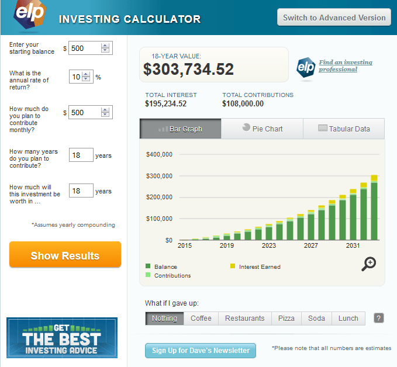
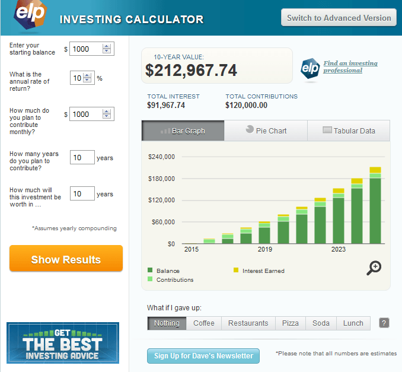

< < < Back
Why Anglo-American Women Are Terrible Financial Investments – Return Of Kings
By now, we all know that in most cases Anglo-American women do not make very good wives, mothers, or responsible members of society. That’s, of course, according to the opinions of millions of men that live in this part of the world.
My intent with this article is to illuminate you on another aspect of your life you will be throwing away if you get entangled with one or produce progeny with her, and that is perhaps the most important one: your financial life.
Sure, money doesn’t buy happiness – but try to live without money and you’ll quickly see what true misery is like. Money buys freedom and it’s hard to have either if you have a predatory Anglo-American female in your life.
According to scientific studies of happiness, there is a big difference in happiness between those who have no money and those who have enough to get by. However, contrary to all the cultural messages we receive, there is no appreciable difference in happiness between someone who has enough to get by and a billionaire. Hard to believe, but true.
So, let’s begin on the risks to your financial well-being and independence that women present in our society. Our goal here is for a man to be able to comfortably take care of his own needs rather than sacrificing his entire existence to an ungrateful woman.
Child Support
Merely siring a child with the wrong Anglo female is a one-way ticket to a life of court-enforced indentured servitude. The court does not care if you can’t find a job, if you become disabled, or if you rightfully protest a system in which there is no accountability on the “mother’s” part (I use the term “mother” loosely) to show the money is being spent on her offspring. The court system only cares that you hand the money over to her. It does not care how the money is spent.
Resources must flow from you to her no matter what for 18 years. Seeing as how the average child support obligation is around $500 a month, and men who do not bow down and kiss the State’s ring are thrown into the gulag by an ever-metastasizing police atate, merely fulfilling your 4.5 billion year old genetic imperative could now cost you jail time.
Not to mention, just look at what that kind of money turns in to, assuming a reasonable 10% return rate on a good growth stock mutual fund over 18 years. Right away, we have $300,000 at stake for one broken condom or lie about her birth control status.
Child support costs more than you think.
Lavish Spending
Assume, if you will, as female-driven spending makes up a good two-thirds of the economy, that your expenses from dating her, or even more frighteningly from being married to her, take up two-thirds of your take-home pay.
No, a simple studio apartment, simple used car or motorcycle, and meals prepared at home won’t be good enough for her. If you tie your fortunes to the wrong girl, she will fully expect to use your resources to keep up with the Jonesettes in your neighborhood.
Assuming you are a good little beta male slave and do whatever your boss tells you no matter how ridiculous it is, and that working 50-60 hour weeks in the “new economy” sounds appealing to you for some reason, and you somehow find a way to navigate the landmine-ridden HR department that wants to destroy you for the crime of being a male, you might be lucky enough pull down an average salary of around $40,000 year.
The average Anglo girl will not be satisfied with that salary, even though it affords her a better quality of life than 90% or more of the rest of the world. You must also realize that the hedonic treadmill she spends her life on may cause her to look someday look for a more affluent meal ticket.
Invest in Yourself, Not Her
Just as her looks start to go and her ass thickens from all that trash she eats…you could have had this instead.
Instead of wisely investing two-thirds of your take-home salary after the government mafia finishes robbing you to pay for other, more irresponsible members of society like single moms and the deadbeats they fuck, having the wrong woman in your life will almost certainly cause you to instead increase your spending.
Supposed that you missed out on investing $1,000 a month. In only five years, you will have missed out on $82,000 of freedom. Around year five, if you’ve picked the wrong woman, she becomes impossible to live with, complains constantly, denigrates you for not being a better provider, and swings you around by the balls with a legal system that heavily favors her.
Moving ahead, after 10 years you could have had over $200,000 in the bank and still afforded multiple trips to sunnier, more libertine countries and enjoyed the company of younger and prettier women. Your relationship with her has now cost you enough money to retire on, if you invested wisely and moved to a country where the cost of living is lower than the U.S.
If you go full boat and have a kid with her, that relationship will have cost you over $1 million dollars in 20 years. Now, don’t get me wrong, I’m not saying never reproduce, but the stakes are high if you choose to do it in the West with an Anglo woman. For those who desire a family, such as myself, it is much cheaper and safer to build your family in another country.
Wrapping Up
Wise words that have survived the test of time.
I’d like to wrap up this little lesson in Female Economics 101 by telling you to wrap it up. Be wary of considering any long-term obligation with an Anglo-American female without extensive vetting. If you choose unwisely, your wallet may never recover.
Read More: Dating American And Non-American Women: A Comparison


{kind=link}
{kind=link}
{kind=link}
{kind=link}